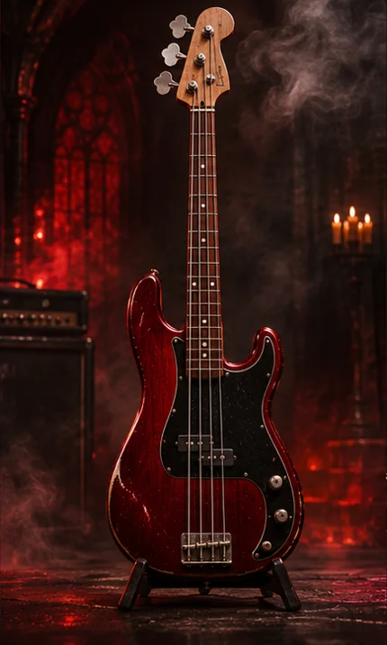

Lead Vocals
The front line of the band, carrying the melodies and connecting with the crowd.
Skunk Draggin’ is a five-piece classic and hard rock cover band from Douglas County, Colorado.
Lead vocals, two guitars, bass, and drums bring familiar riffs to the stage.
The front line of the band, carrying the melodies and connecting with the crowd.
The solos, melodic leads, and guitar accents that cut through the mix.

The chords and riffs that give the songs their weight.

The low end that locks the guitars and drums together.

The backbeat and fills that keep the whole room moving.